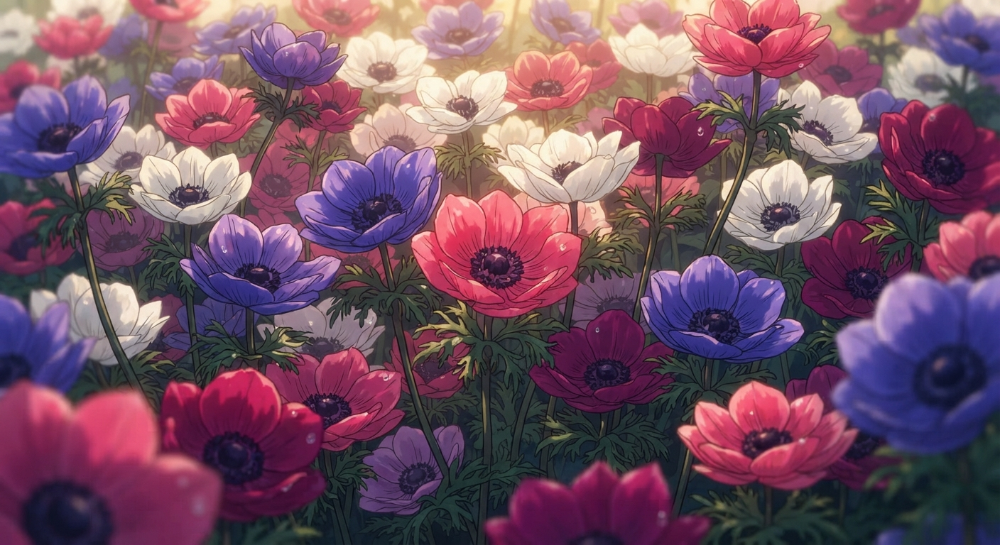
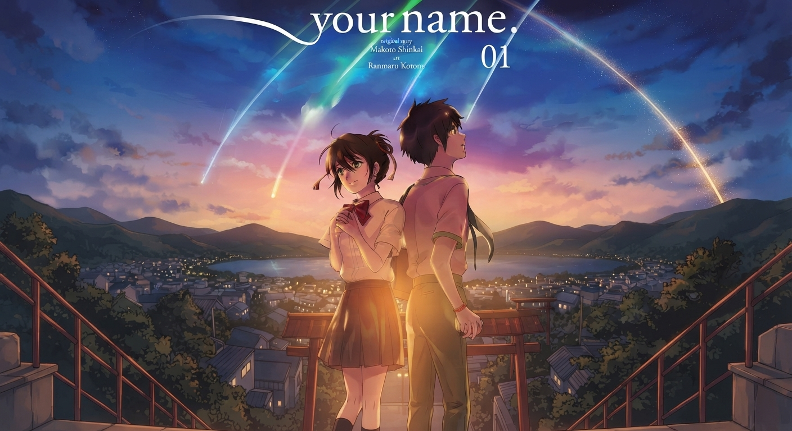
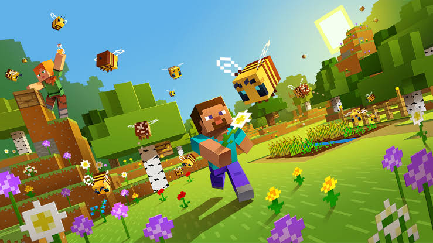
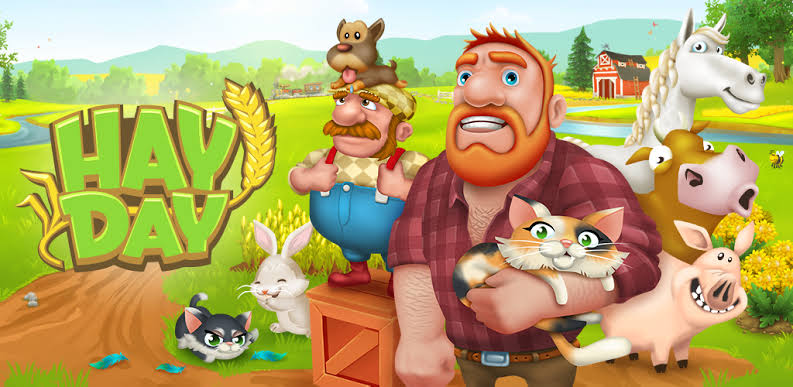
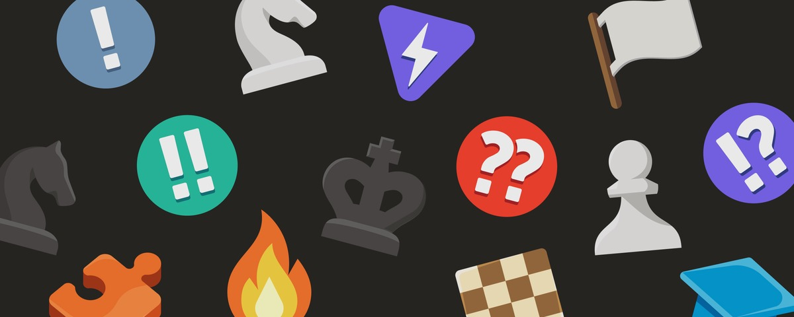
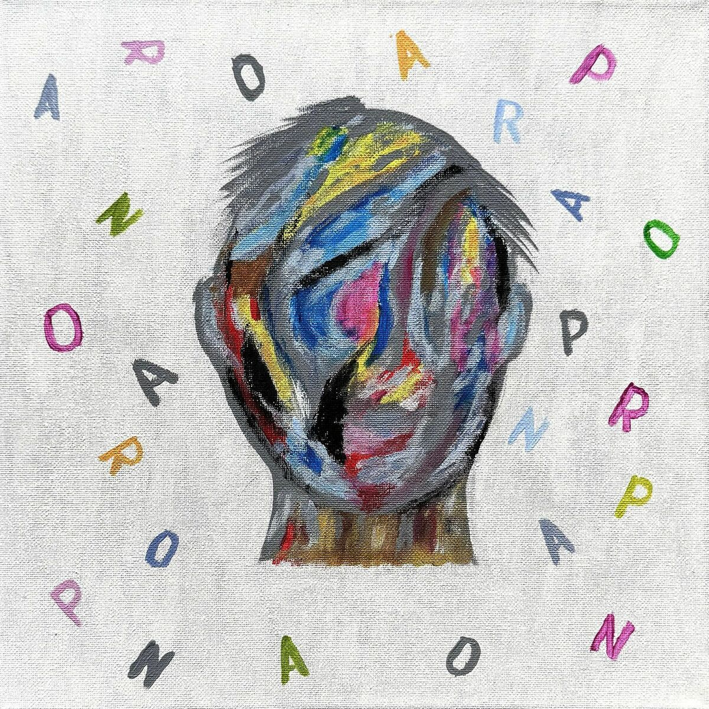
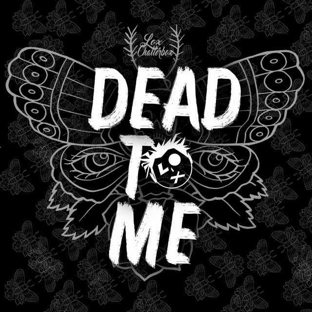

01
Discord bot development
Custom bots, hosted end-to-end — moderation, economy systems, giveaways, music tools, and commands built around your community.
Server-side engineering, clean architecture, and small tools that make a real difference — built thoughtfully from the quiet side of the screen.
 a person, mostly
a person, mostly
A quiet person who enjoys his own space, cares deeply about the things that matter, and likes building useful systems behind the scenes.
Most of my days are spent writing server-side software and exploring ideas in programming. I like the parts people don't always see: the APIs, databases, business logic, and little decisions that keep an application calm under pressure.
When I'm away from a screen, I read manga, tend to my garden, listen to music, and play games. Gardening is my reset button; music is the thing that makes a quiet room feel alive.
No drag-and-drop shortcuts.
Just thoughtful, working software.
Custom bots, hosted end-to-end — moderation, economy systems, giveaways, music tools, and commands built around your community.
Fast, responsive sites and full web apps with the frontend, backend, database, forms, and integrations all speaking to each other.
Interfaces and visual identities that look intentional — from an app's layout to the small icons and graphics that finish it.
Small focused tools that turn repetitive work into one command, including bridges between systems without a convenient official API.
Pure comfort. Ginger-chicken, extra spicy, with a soft-boiled egg and cilantro.

The aroma of flowers instantly calms me. Anemones are the current favorite.

Adventure, mystery, slice of life. I'd rather read manga than watch anime.
I enjoy donghua for its beautiful worlds, long-form stories, powerful characters, and unforgettable journeys.
Spider-Man has always been my favorite superhero, especially Andrew Garfield’s version. I like the emotional depth, humor, movement, and personal struggle he brings to the character.

▦BUILD / EXPLOREMINESolo survival, building, and exploring. Not really here for PvP.

☼GROW / DERBYHAYA daily routine, with a slightly unreasonable focus on completing derby tasks fast.

♞THINK / LOSE / PLAYCHESSPlayed almost every day. An average (not so) player who never gets tired of it.
Music is spiritual nourishment. Here are three local tracks for the late-night tab.

01
03Tell me what you're building. We'll talk through what it needs — no jargon required.
get in touch ↗